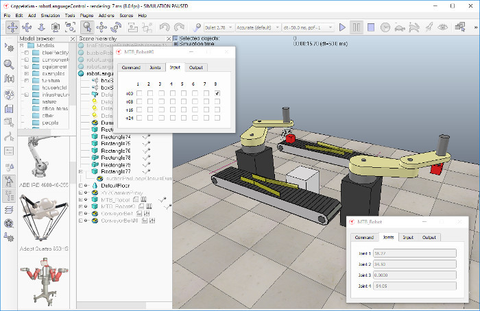
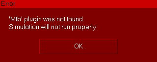
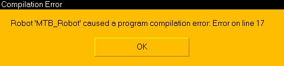
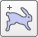
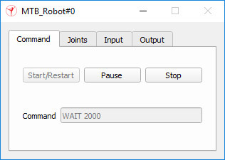

|

Robot language interpreter integration tutorial
This tutorial will try to explain how to integrate or embed a robot language interpreter into CoppeliaSim. The procedure is very similar in case you want to integrate an emulator (e.g. a specific microcontroller emulator) into CoppeliaSim. Extending CoppeliaSim's functionality requires most of the time the development of a plugin. Make sure you have read the tutorial on plugins , and the tutorial on external controllers before proceeding with this tutorial.
The CoppeliaSim scene file related to this tutorial is located in CoppeliaSim's installation folder scenes\robotLanguageControl.ttt. You can find the plugin project files here, and the server application project files here.
First, let's start by loading the related scene file scenes\robotLanguageControl.ttt:

The MTB robot is an imaginary robot (MTB stands for Machine Type B), that will be controlled with an imaginary robot language.
As previously stated, the used robot language is imaginary and very very simple. Following commands are supported (one command per line, input is case-sensitive):
"REM" starts a comment line
"SETLINVEL v": sets the prismatic joint velocity for next movements (v is in m/s)
"SETROTVEL v": sets the revolute joint velocity for next movements (v is in degrees/s)
"MOVE p1 p2 p3 p4": moves to joint positions (p1;p2;p3;p4) (in degrees except for p3 in meters)
"WAIT x": waits x milliseconds
"SETBIT y": sets the bit at position y (1-32) in the robot output port
"CLEARBIT y": clears the bit at position y (1-32) in the robot output port
"IFBITGOTO y label": if bit at position y (1-32) in the robot input port is set, jump to "label"
"IFNBITGOTO y label": if bit at position y (1-32) in the robot input port is not set, jump to "label"
"GOTO label": jumps to "label"
Any word different from "REM", "SETLINVEL", "SETROTVEL", "MOVE", "WAIT", "SETBIT", "CLEARBIT", "IFBITGOTO", "IFNBITGOTO" and "GOTO" is considered to be a label. Now run the simulation. If the related plugin was not found, following message displays (the display of the message is handled in the child scripts attached to objects MTB_Robot and MTB_Robot#0):

If the related plugin was found, then the the MTB plugin will launch a server application (i.e. mtbServer) that basically represents the robot language interpreter and controller. There is no direct need for a server application, the mtbServer functionality could also be directly running inside of the MTB plugin. The main advantages of using that functionality inside of a server application are:
The MTB plugin can act as intermediate for as many different languages as needed, also those that haven't been developed yet: the MTB plugin will simply launch the appropriate server depending on the used robot/language.
If the robot language interpreter / controller crashes, CoppeliaSim won't crash, since the two are distinct and separate processes.
Currently, the MTB server is in charge of two main tasks:
receive the program code (i.e. a buffer) from the MTB plugin, compile it, and initialize the robot controller.
apply input signals, step through the program code (the step duration can be different from step to step), and return output signals and joint angles.
If the MTB server detects an error during compilation of the program code, it will return an error message to the plugin, that will hand it over to the calling child script (i.e. in our case, the child scripts attached to objects MTB_Robot and MTB_Robot#0.), which will display (for example):

If the compilation was successful, then the robots start executing their respective program. The simulation is a maximum speed simulation, but can be switched to real-time simulation by toggling the related toolbar button:
The execution speed can be even more accelerated by pressing the appropriate toolbar button several times:

Each MTB robot program can be individually paused, stopped or restarted at any time via their displayed custom dialog, which are custom user interfaces:

Above custom UI is the user-interface of the MTB robot and can be fully customized. Should the MTB robot be copied, then its custom UI will also be copied. Next to being able to controlling the program execution state, the custom UI also displays current program line (Command) and the MTB's current joint values. The user can also change the robot's input port bits, and read the robot's output port bits. Input and output ports can be read and respectively written by the robot language program. Input and output ports can also be written and read by external devices (e.g. the robot's gripper or suction pad) by using appropriate function calls (see further below).
There are two child scripts attached to the MTB_Robot and MTB_Robot#0 objects. They are in charge of handling the custom dialogs and communicating with the MTB plugin. Most code in the child scripts could be handled by the plugin too. Open the child script attached to one of the two MTB robot (e.g. with a double-click on the script icon next to the robot model in the scene hierarchy). At the top of the script, you will see the robot language code.
Try to modify an MTB robot's program to have it perform a different movement sequence. Experiment a little bit.
The MTB robots are handled in following way:
the actual robot language program is compiled and executed by the "mtbServer" application. That application also holds the MTB robot's state variables. For each MTB robot in the simulation scene, there will be an instance of the mtbServer application launched by the simExtMTB plugin.
the simExtMTB plugin is in charge of providing custom script functions, and also launches the mtbServer application when needed, and communicates with it via socket communication.
the child scripts attached to MTB_Robot and MTB_Robot#0 check whether the simExtMTB plugin is loaded and handle the communication with the plugin.
The MTB robot and its simple robot language is a simple prototype meant to demonstrate how to integrate a robot language interpreter into CoppeliaSim. It is very easy to extend current functionality for much more complex robots or robot languages. All what is needed is:
Building the model of the robot. This includes importing CAD data, adding joints, etc. This step can be entirely done in CoppeliaSim.
Writing a plugin to handle the new robot natively, i.e. to handle the new robot by interpreting its own robot language. Any language capable of accessing C-API functions and capable of being wrapped in a dll can be used to create the plugin (but c/c++ is preferred). The robot language interpreter could be directly embedded in the plugin, or launched as an external application (mtbServer) as is done in this tutorial.
Writing a small child script responsible for handling custom dialogs and linking the robot with the plugin. This step can be entirely done in CoppeliaSim.
Now let's have a look at the MTB's plugin project. There is one prerequisites to embedding a robot language interpreter (or other emulator) into CoppeliaSim:
The robot language interpreter should be able to be executed several times in parallel. This means that several interpreter instances should be supported, in order to support several identical, in-parallel operating robots. This can be handled the easiest by launching a new interpreter for each new robot, as is done in this tutorial.
When writing any plugin, make sure that the plugin accesses CoppeliaSim's regular API only from the main thread (or from a thread created by CoppeliaSim)! The plugin can launch new threads, but in that case those new threads should not be used to access CoppeliaSim (they can however be used to communicate with a server application, to communicate with some hardware, to execute background calculations, etc.).
Now let's have a look at the child script that is attached to the MTB robot. The code might seem quite long or complicated. However most functionality handled in the child script could also be directly handled in the plugin, making the child script much smaller/cleaner. The advantage in handling most functionality in the child script is that modifications can be performed without having to recompile the plugin!
Following is the MTB robot's child script main functionality:
Checking whether the plugin was loaded. If not, an error message is output.
Communicating with the plugin. This means that information is sent to and received from the MTB plugin with custom script functions.
Applying the newly calculated joint values to the MTB robot model. This could also be handled in the MTB's plugin.
Reacting to events on the custom dialogs, like button presses.
Updating the state of the custom dialogs.
Following 3 custom script functions are of main interest (others are exported by the plugin):
int mtbServerHandle,string message=simMTB.startServer(string mtbServerExecutable,
int portNumber,charBuffer program,table[4] jointPositions, table[2] velocities)
int result,string message=simMTB.step(int mtbServerHandle,float timeStep)
table[4] jointValues=simMTB.getJoints(int mtbServerHandle)
simMTB.startServer: launches the server application (e.g. mtbServer) on the specified port, connects to it, and sends it the robot language code, the initial linear/angular joint positions, and the initial velocities. In return, the function returns a server handle (if successful), and a message (usually a compilation error message).
simMTB.step: steps through the robot language program with the specified timeStep, and returns a result value and a message (usually the code being currently executed).
simMTB.getJoints: retrieves the current linear/angular joint positions. The linear/angular joint positions are automatically updated when simMTB.step is called.
You could also imagine slightly modifying the step function, and add one additional function, in order to be able to handle intermediate events triggered by the robot language program execution. In that case, each simulation step would have to execute following script code (in a child script):
local dt=sim.getSimulationTimeStep()
while (dt>0) do
result,dt,cmdMessage=simMTB.step(mtbServerHandle,dt) -- where the returned dt is the remaining dt
local event=simMTB.getEvent()
while event~=-1 do
-- handle events here
event=simMTB.getEvent()
end
end
|